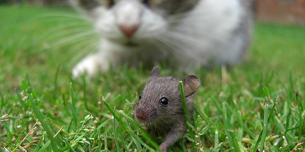
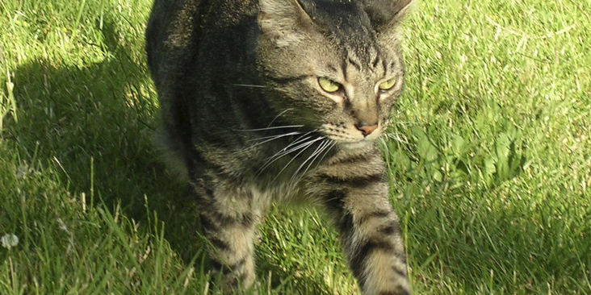
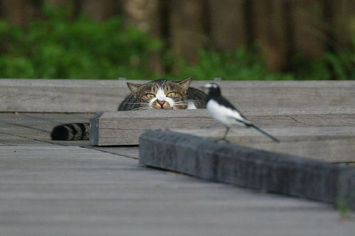
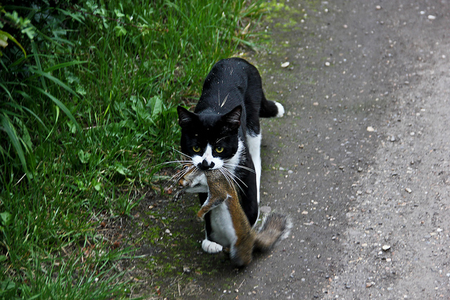

Tattered Offerings
My Liking
I liked her because she was a free spirit, and a survivor, going out for two, three, even five days, in all seasons. She’d show up when it suited her, waiting in the dark before dawn till I came downstairs and turned on my desk lamp. Then she’d make her presence known by rising up on her hind legs and gently scratching with her forepaws on my window.
- 
-

- 
First Gifts
Sometimes, without stopping to say hello, she’d leave us tattered offerings, with little starbursts of coagulated blood, on the front walk. The birds were disturbing, the moles and deer mice not so much. Jane, the older woman who lived two doors down, mentioned that Lucky sometimes lurked near her bird feeder, but she didn’t seem to think much of it, and neither did we. We put a bell on Lucky, but it didn’t last a week before she shed it in some bush.
The Trend
Early Adopters
If all this sounds lackadaisical, particularly in someone who writes about wildlife, I should note that Lucky, who died in 2008, was our last outdoor cat.
We were about to become early adopters in the trend that is beginning to make outdoor cats as socially unacceptable as smoking cigarettes in the office, or leaving dog droppings on the sidewalk. What’s driving this trend is a growing sense of alarm about the dramatic decline in wildlife, and especially bird, populations, combined with a new awareness that cats bear a significant share of the blame.
Dropping Numbers
The National Audubon Society tracks 20 common North American bird species — Eastern meadowlarks, field sparrows and the like — that are now in decline. Their numbers have dropped by 68 percent on average since 1967, because of a variety of factors. In Britain, likewise, farmland bird populations have plummeted just since 1995, with turtle doves, for instance, down by 85 percent, cuckoos by 50 percent, and lapwings by 41 percent.
If these were stock market numbers, people would be leaping from buildings. But the peculiar thing about what biologists have called “the second Silent Spring” is that people tend not to hear it.
It's Not Normal
Like a lot of other cat owners, I used to think that when Lucky went outside and, now and then, killed an animal, she was “just doing what’s natural” for a cat. I was aware that cats have caused or contributed to the extinction of 33 species. But all of those species were living on islands and many had likely never seen a predator before early navigators introduced cats. The mainland nature around me was savvier than that, I figured, and had the scale to handle incidental killings by a few house cats.
But that is no longer true, if it ever was. Intensification of agriculture is eliminating millions of acres of habitat from the countryside. The relentless development of cities and suburbs has also squeezed out wildlife, and will squeeze harder over the next few decades. Urbanized land area in the Lower 48 states is on track to more than triple between 1990 and 2050, according to the United States Forest Service. In four Northeastern states, more than 60 percent of the total land area will be urban by midcentury, up from about 35 percent in 2000.
Wildlife
In the Margins
Wildlife increasingly hangs on in the margins, in parks and on forgotten scraps of land, which function, as it happens, a lot like islands.
And wildlife in this country must share this land with a growing population of about 84 million owned cats, and anywhere from 30 to 80 million feral or stray cats. When all of them do “what’s natural” in a fragmented natural world, it adds up. Using deliberately conservative assumptions, federal researchers recently estimated that free-ranging cats killed about 2.4 billion birds annually in the Lower 48 states, a substantial bite out of the total bird population. Outdoor cats also kill about 12.3 billion small mammals a year — not just the proverbial rats and mice but also chipmunks, rabbits and squirrels — and about 650 million reptiles and amphibians. In some cases, they are pushing endangered species toward extinction.
The Cost
But here is the number that sticks in my mind: Letting my own cat, Lucky, outdoors may have consigned as many as 33 birds and dozens of mammals to death every year. If you have ever seen a cat toy with its victim, you know these are not quick, or pretty, or painless deaths. So you might expect animal welfare groups to be ardently campaigning against outdoor cats, and particularly against the care and feeding of feral or stray cats, which do most of the killing.